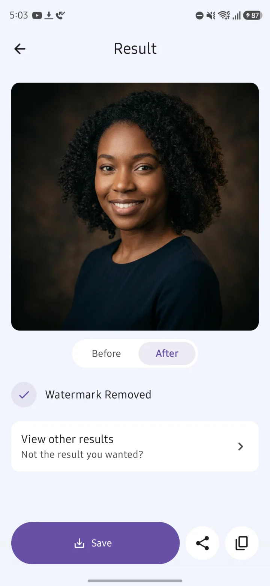
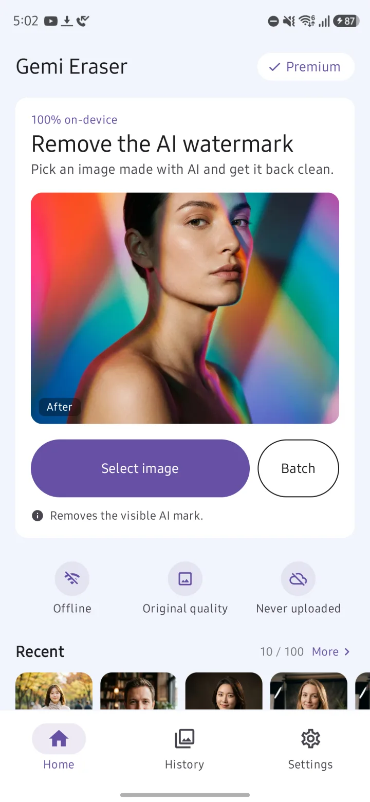
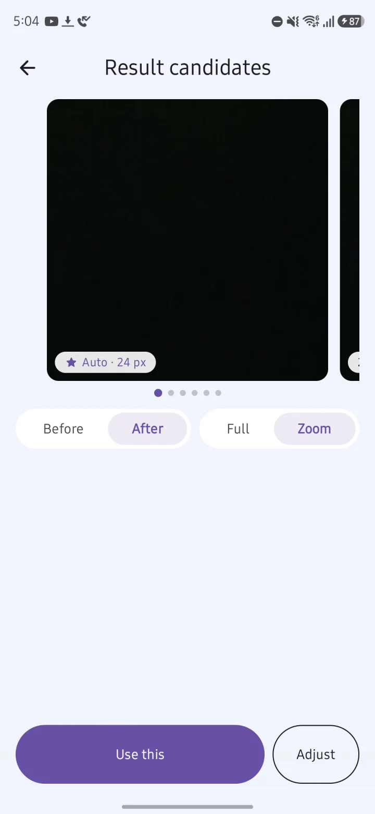
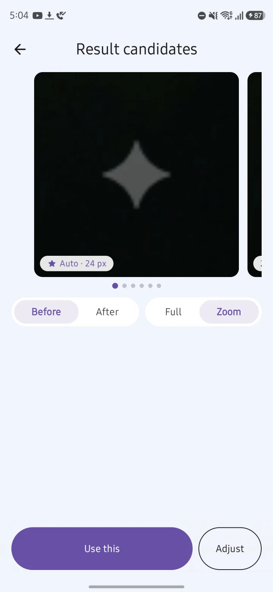
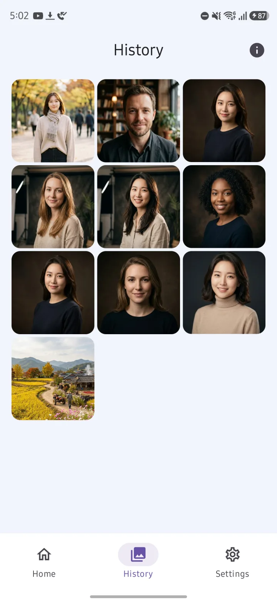

Pick an image. That's it.
Gemi Eraser finds the watermark and removes it on its own. There's nothing to set up. You can check the result side by side with the original.

Gemi Eraser is an Android app that removes the visible watermark — the sparkle logo in the bottom-right corner — from images made with Google Gemini, entirely on your phone, without uploading them. It's free with ads and has no daily limit; a one-time lifetime purchase removes the ads and unlocks batch processing.
Get it on Google Play
Pick an image and Gemi Eraser finds the logo in the corner and removes it. It all happens on your phone. Nothing gets uploaded.
Detection and removal both happen on your device, and your images are never uploaded. That also means it works without an internet connection.
Share an image from another app to Gemi Eraser and it gets cleaned right away. Picking several images and cleaning them in one go is a Premium feature.
Gemi Eraser finds the watermark and removes it on its own. There's nothing to set up. You can check the result side by side with the original.

Because the logo's shape and transparency are known, Gemi Eraser reverses the blend to recover the original pixels underneath. Only the watermark area changes. Results are saved as lossless PNG, and your original file stays untouched.

Not quite clean? Tap View other results to zoom in and compare candidates, then use Adjust to set the position, size and strength yourself.

Cleaned images collect in History, where you can save, share or copy them again later. It keeps 100 by default (or unlimited, if you choose), and you can turn History off if you'd rather not keep anything.

| Free | Premium | |
|---|---|---|
| Price | Free | Ad-free Lifetime Pass, US$1.99. One-time purchase, not a subscription |
| Daily limit | None | None |
| How images are cleaned | One at a time | One at a time, or in batches |
| Ad before the result | One ad when a watermark is found — only the first time each day. Watch it to the end and you won't see it again that day | None |
| Ads in the app | Banner and native ads, plus an ad when you open the app | None |
| Compare results, Adjust, History, share to clean | ✓ | ✓ |
Price shown is for the US and varies by region (₩2,900 in Korea).
| Gemi Eraser | Photo editor erase tools | Web watermark removers | |
|---|---|---|---|
| What it removes | Only the sparkle logo in the bottom-right of Gemini images | Whatever you brush over | Varies by tool |
| How | Reverses the blend using the logo's known shape and transparency, recovering the original pixels | Usually fills the area in from its surroundings | Varies by tool |
| Images that already have the logo | ✓ If it's the original Gemini file | ✓ | Varies by tool |
| Screenshots and cropped copies | May not be detected, or traces may remain | ✓ Brush over it | Varies by tool |
| Uploads your image | No, processed on your phone | Varies by app | Varies by tool |
| What you need | Android 10 or later. Free with ads, or a lifetime purchase | A photo editing app | A browser |
Category columns describe typical behavior; individual apps and tools vary.
Use Gemi Eraser. It removes the semi-transparent sparkle logo in the bottom-right corner of images made with Gemini, right on your phone. Pick an image and it finds and removes the watermark on its own; there's nothing to set up. It runs on Android 10 and later.
Gemi Eraser is free and has no daily limit. In return, an ad plays before the result when a watermark is found, and there are ads in the app. The ad before the result only comes the first time each day: watch it to the end and the rest of the day's results show right away, but if you close it early, that result is canceled. Cleaning several images at once is a Premium feature.
It's a one-time purchase, the Ad-free Lifetime Pass, not a subscription. It's US$1.99 in the US, and prices vary by region. It removes all ads and unlocks batch processing.
Usually because the image isn't an original Gemini file. Gemi Eraser only removes the sparkle logo Gemini adds to its images, so there's nothing to find on other services' logos or on regular photos. Even with a Gemini image, a screenshot, a cropped or resized copy, or a file re-saved by another app may not be detected. Try the original image exactly as you downloaded it from Gemini.
On the result screen, tap View other results to zoom in and compare other candidates. If traces remain, use Adjust on that screen to set the position, size and strength by hand. Leftover traces usually mean the image isn't the original file.
No. Your images are processed on your phone and never uploaded. That's why image processing works without an internet connection. The app does go online for ads, anonymous usage stats and crash reports, checking for app updates, and verifying purchases through Google Play.
No. Gemi Eraser doesn't ask for permission to read your photos or storage. It only gets the images you pick with Android's photo picker or share to it from another app. It doesn't use accessibility access either.
Only the pixels in the watermark area change; the rest stays as it was. When you save or share a result, it's stored as a lossless PNG in Pictures/GeminiEraser on your device, and your original file isn't changed. Very large images, over about 18.9 megapixels, are scaled down before processing.
No, SynthID stays in the image. Gemini images carry both the visible logo and SynthID, an invisible watermark; Gemi Eraser removes only the visible logo.
Yes, with Premium. On the free plan, you clean one image at a time. Select several images and they're cleaned one after another; Android's photo picker sets how many you can select at once. Sharing several images from your gallery or another app also starts a batch.
No. Gemi Eraser is for Android 10 and later, and there's no iPhone version. It works on images only, so it can't remove watermarks from videos, such as those made with Flow.
Images in History are stored only inside the app and are deleted when you uninstall it. Save the ones you want to keep first; saved images are in Pictures/GeminiEraser on your device. There's no account or sign-in.